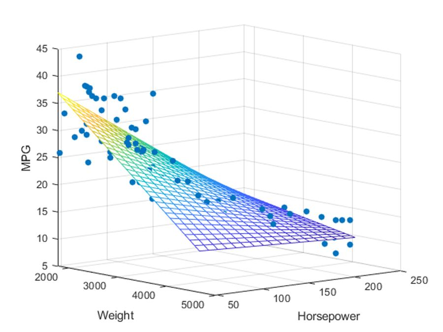
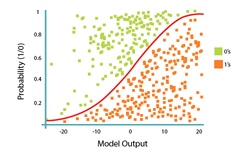
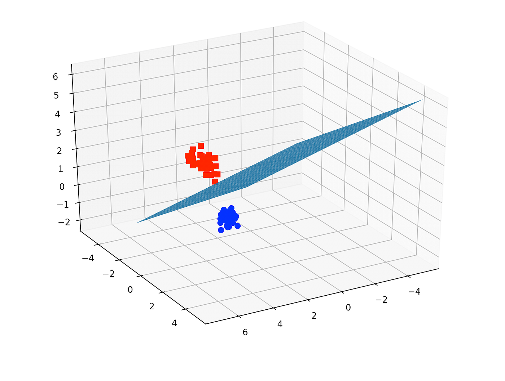
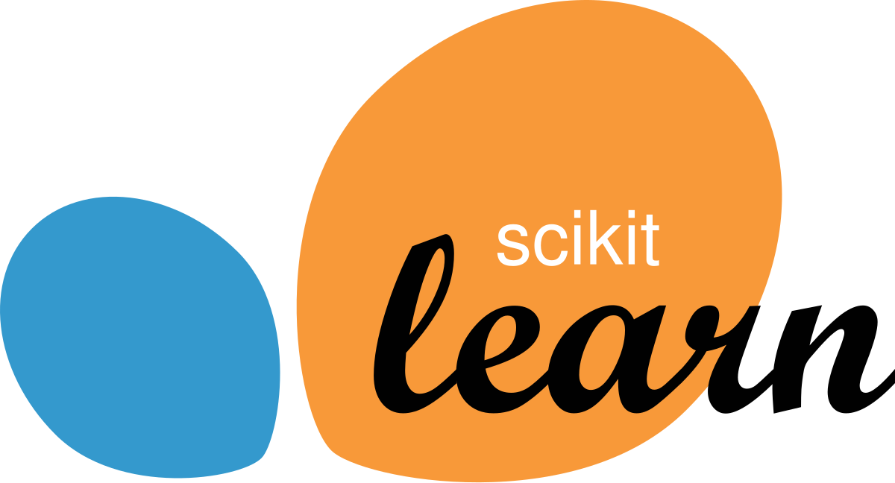

Bloque 3: Vibracion Normal o Peligrosa? ISO 20816
Ok, tenemos un RMS de 5.2 mm/s. Es bueno o malo? Depende de la maquina. La norma ISO 20816 es la version actual que reemplaza a la antigua ISO 10816, consolidando y actualizando los criterios de evaluacion de vibraciones mecanicas. Esta norma nos da un "semaforo" de referencia, pero este cambia segun el tipo y tamano del equipo.
ISO 20816-3: Máquinas acopladas (15 kW - 50 kW)
ISO 20816-4: Máquinas hidráulicas

ISO 20816-7: Evaluación de vibración en motores pequeños (<15 kW)

Nota
Con respecto a las clases, se debe entender que se agrupan teniendo como criterio la potencia de la maquina y el tipo de soporte sobre el cual se encuentra instalada. De esta forma, los grupos se diferencian segun rangos de potencia (por ejemplo, hasta 15 kW, de 15 kW a 300 kW, o superiores a 300 kW) y segun si el soporte es rigido o flexible, ya que el tipo de base influye directamente en los niveles de vibracion admisibles. El analisis de la severidad es realizado por ingenieros de mantenimiento de diferentes categorias.
Por que Regresion Logistica y no otros modelos?
Existen muchos modelos de "regresion", pero no todos sirven para lo mismo. La regresion lineal, por ejemplo, intenta predecir un numero continuo (como el precio de una casa). La Regresion Logistica es especialista en problemas de clasificacion binaria como el nuestro, calculando la probabilidad de que una maquina pertenezca a una clase de algun tipo.
Regresion Lineal

Uso: Prediccion de valores continuos
Regresion Logistica

Uso: Clasificacion binaria
SVM

Uso: Clasificacion compleja
Nuestras Herramientas (Tecnologias)
- Lenguaje: Python. El estandar de facto en ciencia de datos por su simplicidad y sus potentes librerias (Pandas, Scikit-learn).


- Entorno: Google Colab. Un cuaderno interactivo en la nube que nos da acceso gratuito a GPUs y nos permite colaborar facilmente.

- Datos: Archivos CSV. Datos reales de vibracion y temperatura tomados en campo por un sensor, nuestra materia prima.